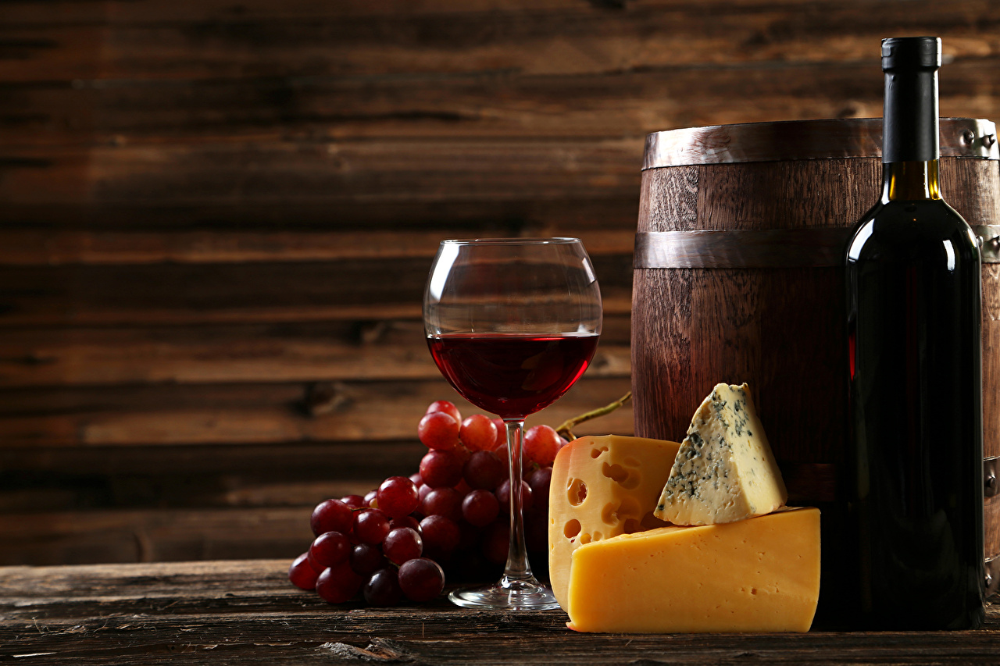

Fresh or unripened cheeses are coagulated under the action of lactic acid fermentation in the milk instead of adding rennet. While they are drained after formation of the curd, they are neither ripened nor fermented. This category includes COTTAGE CHEESE, RICOTTA, MASCARPONE, CREAM CHEESE AND QUARK. Fresh cheeses are mainly used in baking and desserts, plain or flavored with vegetables, fruits, herbs or spices.
Find out moreSoft cheeses are divided in two categories according to the characteristics of the rind: the surface-ripened soft cheeses (covered with a thin layer of a white down or mold) like BRIE, CAMEMBERT and COULOMMIRES, and the interior-ripened soft cheeses (washed in light brine to maintain the moisture level and softness of the cheese) like MUNSTER, PONT-l’ÉVÉQUE and ÉPOISSES.
Find out moreSemi-firm cheeses are uncooked pressed cheeses that are dense and usually pale yellow in color. They include Cheddar, Cantal, Reblochon, Edam, Gouda and Monterey Jack. Firm cheeses are cheeses that have been cooked and pressed. The curd is heated for an hour in order to make it more concentrated, which, upon pressing, produces a more compact cheese. Their texture is usually firm, although some hard cheeses, like Parmesan and Romano, may have a rather granular texture. Gruyère, Emmenthal, Jarlsberg, Raclette and Beaufort also are a part of that category.
Find out more